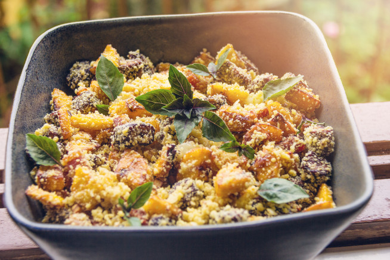
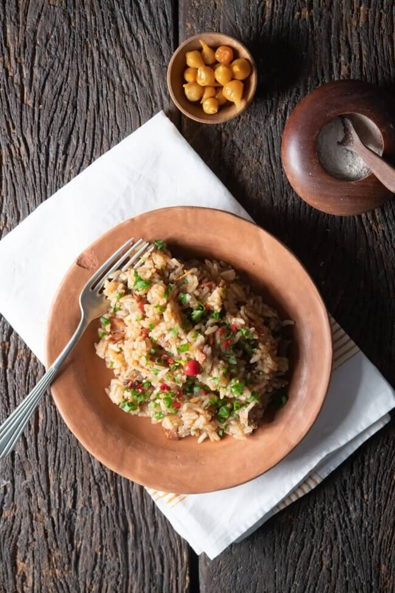

Receitas do Dito
Farofa de Banana
- 1/2 copo de óleo
- 2 bananas maduras
- 1 cebola picada
- 1 colher (chá) de sal
- cheiro-verde a gosto
- 1/2 colher de margarina
- 1/2 copos de farinha

Arroz Carreteiro
- Meio quilo de charque
- 1 colher(sopa) de óleo
- Meia cebola média picada
- Meio pimentão verde picado
- 4 tomates sem pele picados
- 1 xícara (chá) de arroz
- 1 tablete de caldo de carne
- Meio maço de cebolinha-verde picada
